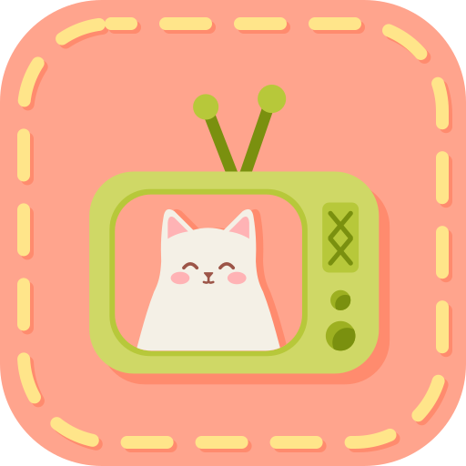
A · Channel Momo
ChosenYour drawing rebuilt on geometry: matcha TV, antennas, Momo on a peach screen, the stitched frame. It tells the whole story (a cat, a TV, a cosy evening) and holds at 32 px.
Direction B · Playful cat-forward
A warm, rounded identity built from your TV-cat drawing. Posters stay the hero; the personality lives in the chrome, the empty states, the words and the motion. Utility screens stay dense and serious.
01 · Brand
Your drawing already says what momoshtrem is: something cosy that plays on the TV. The explorations test how far it can be simplified; the final set keeps your idea and makes it work from 16 px to 1024 px.

Your drawing rebuilt on geometry: matcha TV, antennas, Momo on a peach screen, the stitched frame. It tells the whole story (a cat, a TV, a cosy evening) and holds at 32 px.
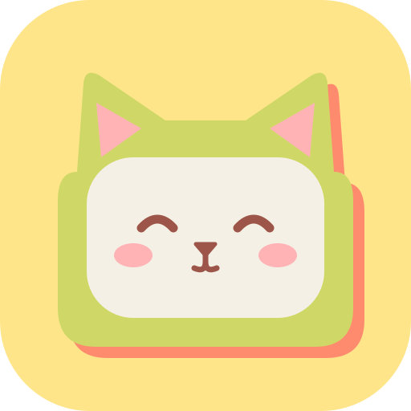
The TV is the cat: antennas become ears, the screen becomes the face. Very iconic and great at 16 px, but it loses the “cat watching TV” warmth and reads a little like a toy.
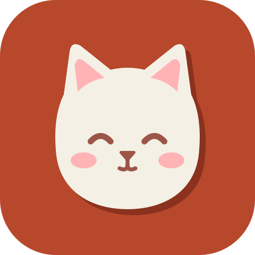
Just Momo’s head as a sticker. The friendliest and most compact, but generic: nothing says “TV” or “media”, and it competes with the mascot instead of framing it.
Refined A: shapes snapped to a 512 grid, the cat enlarged to fill the screen, the knobs given depth, and a hand-tuned favicon for 16 and 32 px where the antennas, screen and ears survive. The wordmark is Fredoka SemiBold, outlined, always lowercase.
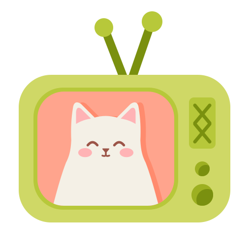
Mark · flat, on peach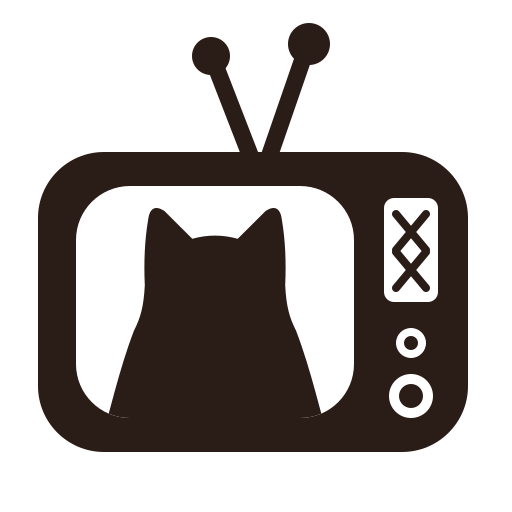
Monochrome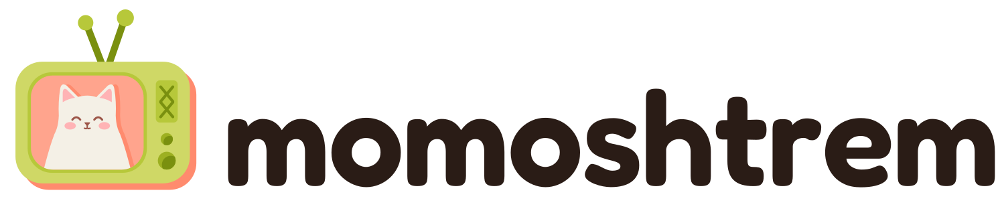
Lockup
Lockup · dark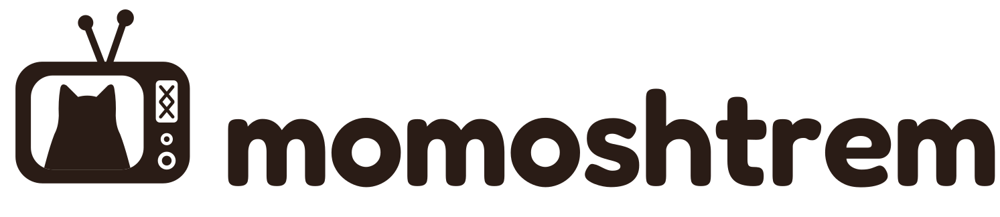
Lockup · mono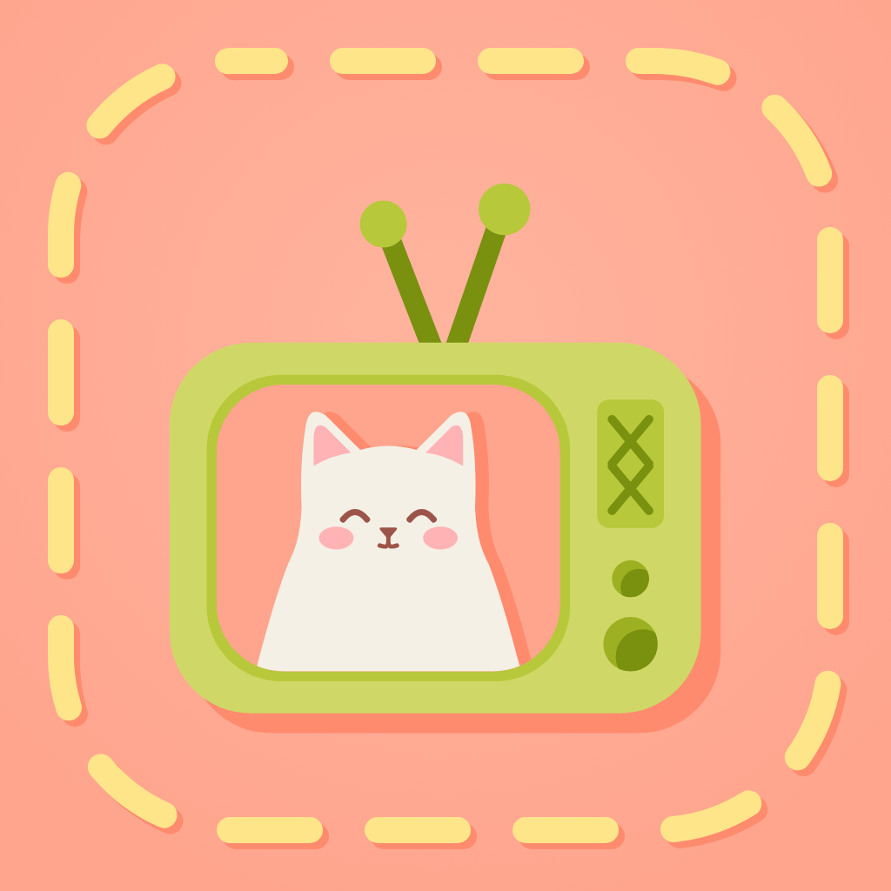
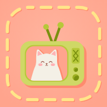
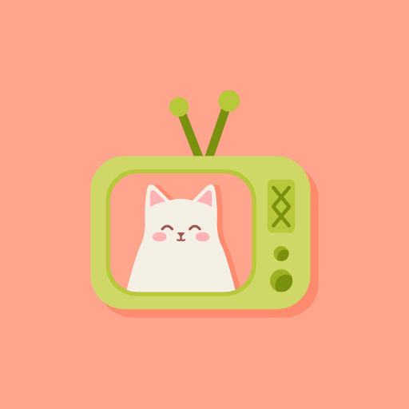
Drawn separately on a 16 and 32 grid; not a scaled-down mark.
Clear space: the height of one antenna knob around the mark. Minimum size: the full mark from 40 px; below that use the favicon artwork. Never recolour the cat, put the mark on busy artwork, or capitalise the name. In the app the lockup sits on the top bar; the mark alone is the PWA and home-screen icon.
Files (in the repo, docs/redesign/design/playful/): brand/logo/ mark, mark-flat, mark-mono, wordmark, lockup, lockup-dark, lockup-mono, app-icon, maskable, favicon (SVG) · brand/png/ app-icon-1024, apple-touch-icon-180, maskable-512/192, icon-512/192, favicon-16/32/48, favicon.ico.
Keep the name Momo. It’s the first half of momoshtrem, so “Ask momoshtrem” and “Momo thinks you’d love…” point at the same character without explaining anything. Momo is cream and round with pink ears, always drawn with the coral offset shadow from your icon, and always sits on a peach spot so it reads on cream and on espresso. Momo speaks in the third person (“Momo found…”), never in errors that matter.
Small motifs: paw-print progress, cat-ear active tab, tail-flick on success, the stitched yellow frame on sign-in. Each has a reduced-motion version (no travel, no loops).
Short, warm, a little witty. Sentence case. Buttons are verbs. Numbers stay numbers. When something actually matters, Momo steps aside and the copy gets plain.
| Moment | momoshtrem says | Not |
|---|---|---|
| Empty library | Your library is empty. Momo is napping on the TV until you add something. | No items found. |
| Added | Added. Momo’s on it. | Torrent successfully added to queue! |
| AI picks | Momo thinks you’d love these. Same puzzle-box hook as Severance, about half the dread. | Here are some recommendations based on your preferences. |
| Working | Momo is picking tonight’s shelves… | Loading… |
| Backend down | Can’t reach momoshtrem. Infuse can’t stream new files until it’s back; downloads resume on their own. | Oops! Momo tripped over a cable 🙀 |
| Wrong password | Wrong username or password. | Nice try, human. |
| Remove | Remove Past Lives? It disappears from your library and from Infuse. Watch history on Trakt stays. | Are you sure? |
| Primary actions | Find a torrent · Add & assign · Apply 10 mappings · How to play | Search Torrents · Submit · OK · Ready to Stream |
02 · Design system
Tokens live in tokens/tokens.css (plain CSS custom properties) and tokens/theme.css (Tailwind v4 @theme), both generated from one source. Every hue means exactly one thing, so there is never a question about what’s primary.
Fredoka (rounded, soft) for headings, buttons and the wordmark. Atkinson Hyperlegible Next for everything you read; it was designed so 1/l/I and 0/O never get confused, which matters for release names on a phone. Atkinson Hyperlegible Mono for file names, paths and codes. All three are on Google Fonts (load with next/font).
Quick and springy: things pop in with a little overshoot, sheets slide with a soft deceleration, success flicks Momo’s tail. Tap a card to play it. With reduced motion (OS setting or Settings → App), springs become plain fades, loops stop, sheets fade instead of sliding, and the tail stays still.
Lucide, 2 px stroke, round caps, at 14 / 16 / 20 / 24 px. Icons always come with a word, except in toolbars where they have an aria-label and a tooltip. Momo replaces icons only in empty, loading, error and success moments.
Rendered live from the same code as the prototype, in both themes. Everything is at least 44 px to tap (small controls keep an invisible 44 px hit area), and nothing important appears only on hover.
03 · Screens
These frames are the real responsive prototype at 390, 768 and 1440 px, not static pictures. Pick a screen and a state; switch themes. Anything you can tap in a frame works. Static PNG exports of every frame are in exports/ in the repo.
04 · Prototypes
Each flow runs in the prototype with a little guide card and a highlighted next step. You can wander off the path; the guide catches up. Restart resets the flow.
05 · Handoff
The full notes are in HANDOFF.md. The essentials: